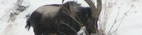
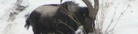

Since snow leopards live on a somewhat straight longititudinal path, their diet doesn't have much variety in the animals they eat
| blue sheep | Argali wild sheep | deer | India | Kazakhstan | Tajikistan |
| ibex | marmots | pikas | Pakistan | Russia | Uzbekistan |
 
